FIELD1
港町アデン（最終章）
エンカウント率0%オード全曲を受け取ったあと、船で戻ってきたときの港町アデン。武器屋と防具屋は店を閉め、町の人はガリハアクの復活におびえている。
名前 建物・場所→ ほかの FIELD へ1メインイベント1サブイベント
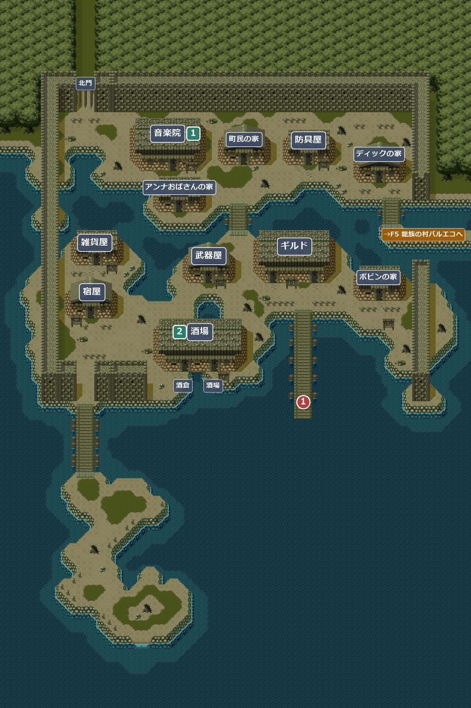
！町の人のセリフは、最初に訪れたときとはすべて変わり、ガリハアクの復活を嘆くものになる(「おしまいだ…」「みんな、みんな、ガリハアクに殺されちまうんだ…」など)。
！北門は閉じていて、アルカナの山道へは出られない。
イベント
1
アデンに帰る
場所: 桟橋(X100-104 Y137)
F80 オーパスの村から船で桟橋に着くと、アイリスが「帰って来たのね… 始まりの島に…」。オードを見つけたので、おとうさまのところへ行こう、と言う。
次へ→F5 龍族の村バルエコへ(町の東の出口)。モルガンの家を訪ねる。
サブイベント
1
院長の私室(まだの場合)
場所: 音楽院の左奥の扉(X6 Y11)→ 院長の私室(部屋115)
最初に訪れたときに院長の私室の物を取っていなければ、まだ残っている。扉で音楽院の鍵を「使う」と入れる(鍵はなくなる)。机の上の日記を読んでから一番右端の棚を調べると歌を2つ覚える。宝箱もある。
入手 炎の槍の歌
炎の槍の歌 氷の矢の歌
氷の矢の歌 のどあめ×3
のどあめ×3
2
カウンターで歌う(まだの場合)
場所: 酒場(部屋101)のバーテン(X32 Y19)
酒場の歌を覚えていて、歌の報酬をまだもらっていなければ、カウンターのバーテンの前(X32 Y19)で酒場の歌を使うと報酬がもらえる(1回だけ)。
報酬が出るのは X32〜33・Y19 に立ったときだけ。右に半マスずれた X33 なら報酬が出るが、左に半マスずれた X31 では、バーテンとは話せても歌の報酬はもらえない。
入手お金(5 × 主人公のレベル + 0〜20 GOLD)
部屋
101アデンの酒場
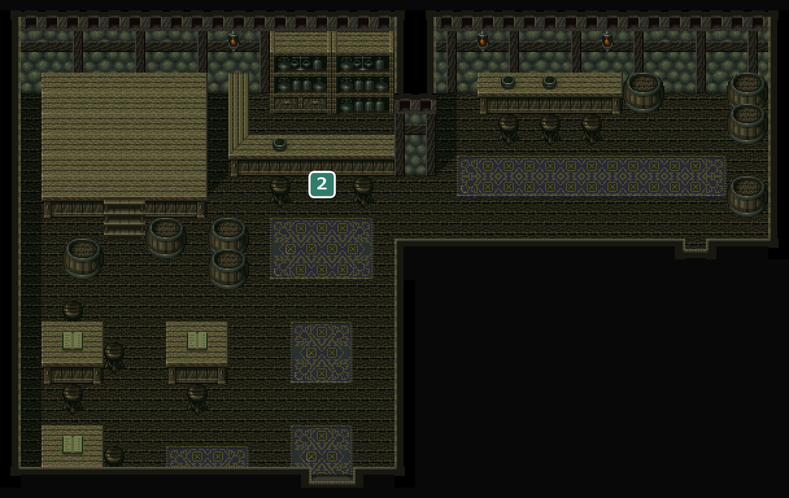
元のマップは 40×30 マス。下約5マスの何もない部分を切って載せている。
2カウンターで歌う(まだの場合)
102103アデンの酒倉・アデンの酒倉の地下

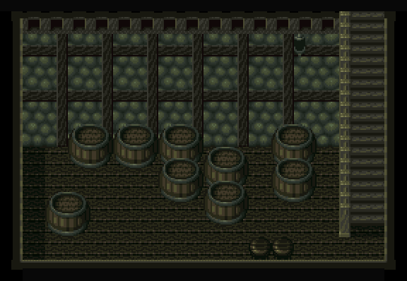
108115アデンの音楽院・アデンのアギーレ院長の私室
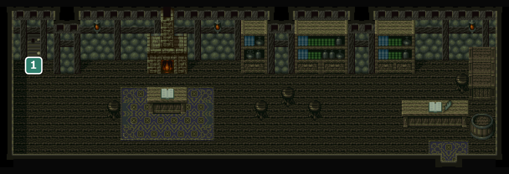
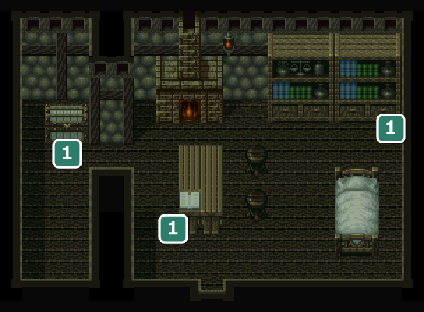
1081左奥の扉は院長の私室(音楽院の鍵が必要)。
1151日記・力の楽譜・宝箱(まだの場合)
106アデンのアンナおばさんの家
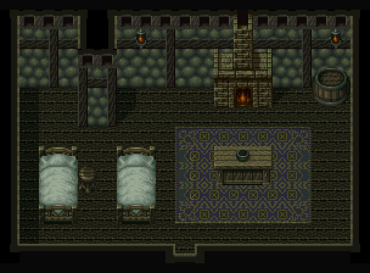
105アデンのボビンの家
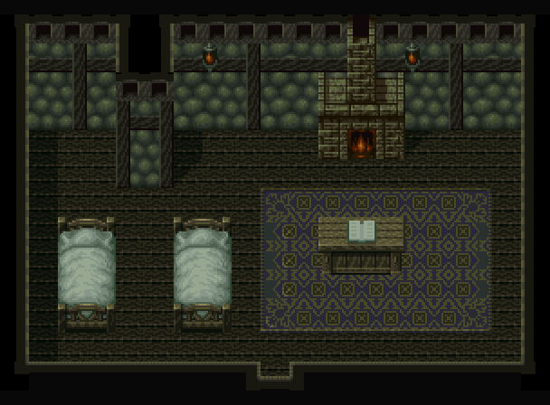
104アデンのディックの家
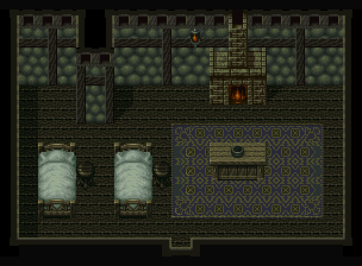
注意浜辺でディックの話を聞いていて１２弦指板をまだ買っていなければ、ここで10GOLDで買える。ただし、今付けている指板がもっと良い物でも１２弦指板に置き換わり、LUTE が下がる(元の指板は戻らない)。
109114アデンの宿屋・アデンの宿屋の２階
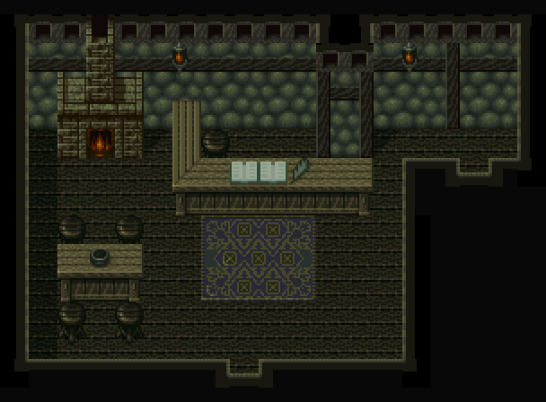

109宿泊は無料。主人は「好きに泊まって下さい…。商売どころではありません…」。
114宿屋に泊まるとここで眠る。
！外観は平屋建てなのに、泊まって寝室(２階)へ移るときに階段の効果音が鳴る。
110アデンの武器屋

閉店。店員は「おしまいだ…」と言うだけで、武器は買えない。
113アデンの防具屋
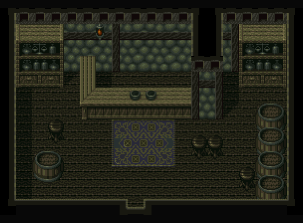
閉店。店員は「もう、商売どころではありませんね…」と言うだけで、防具は買えない。
112アデンの雑貨屋
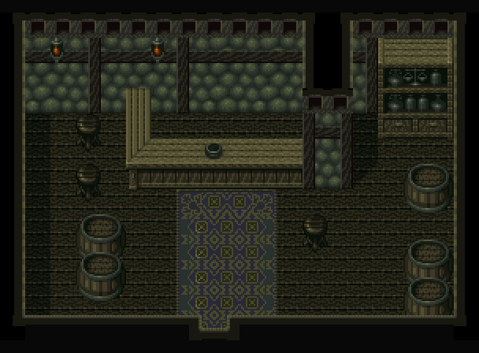
品ぞろえが変わり、上級の小ビンとのどあめを売っている。
| 商品名 | 値段 | |
|---|---|---|
| 白色の小ビン | 70 | |
| 銅色の小ビン | 100 | |
| 銀色の小ビン | 200 | |
| 黄金の小ビン | 400 | |
| スーパーのどあめ | 40 | |
| のどあめＤＸ | 60 | |
116アデンのギルド

107アデンの町民の家
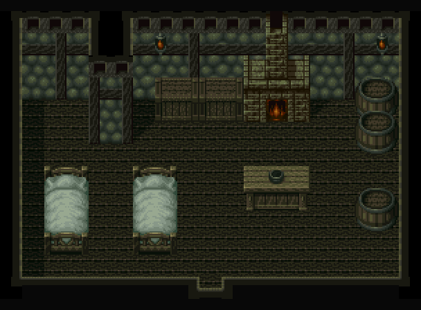